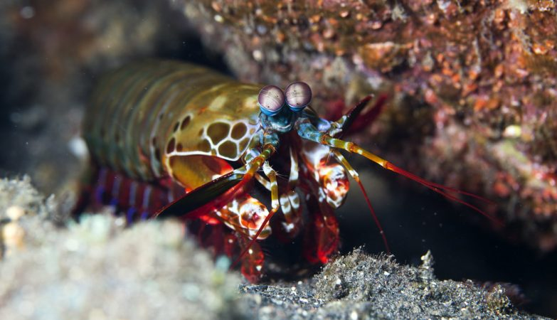
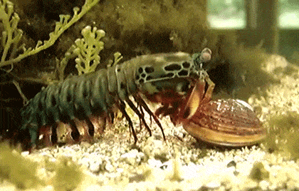
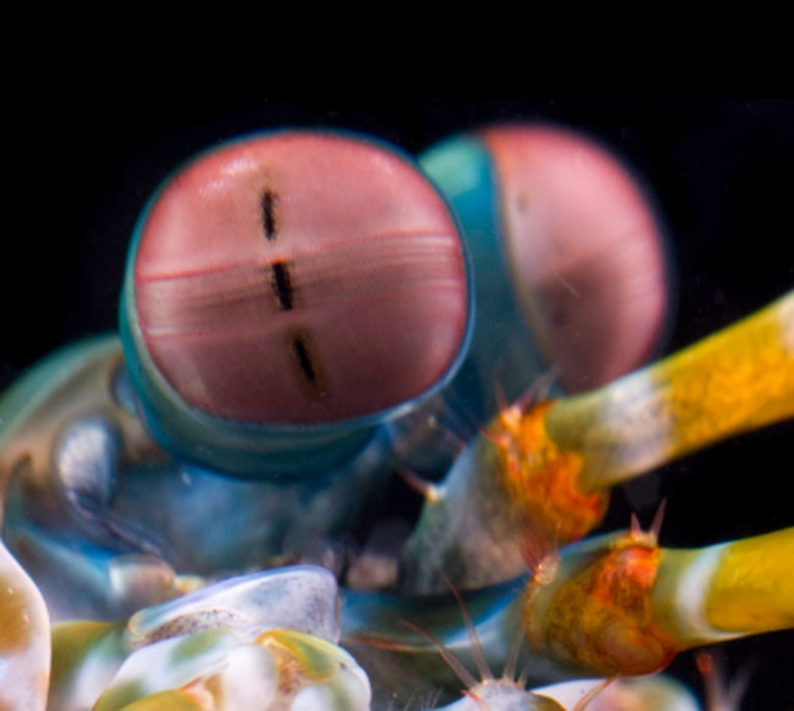
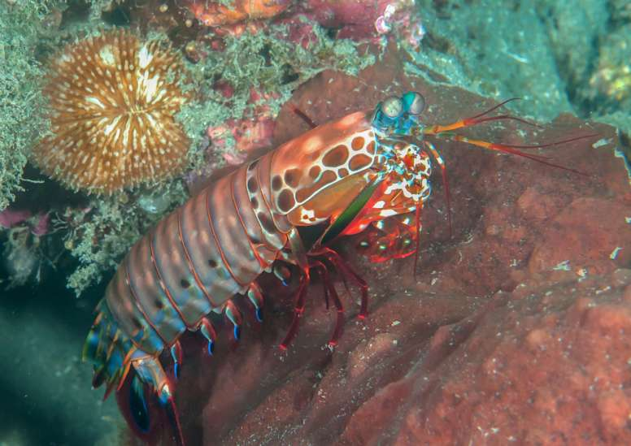
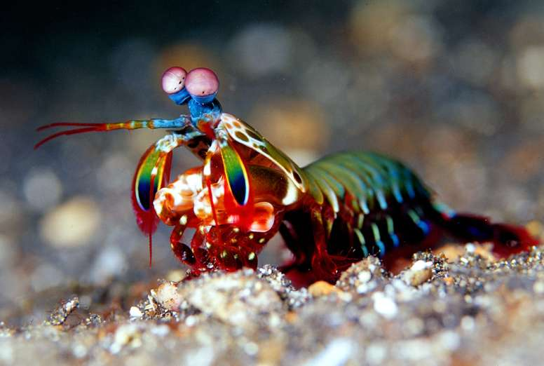
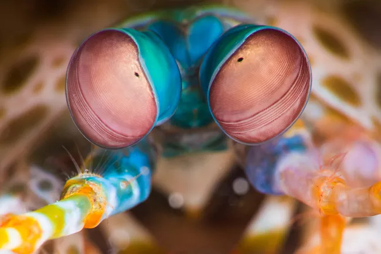
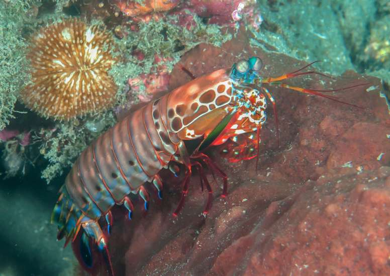
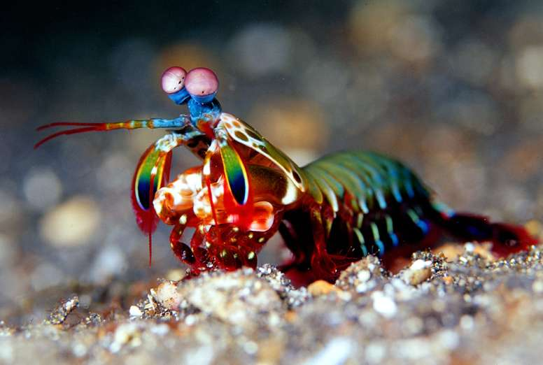
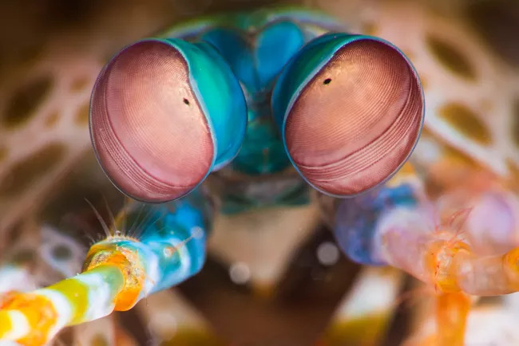

Odontodactylus scyllarus
Ou popurlamente conhecido no Brasil como tamarutacas
São predadores que com o auxílio de um sentido de visão muito apurado conseguem se alimentar de camarões,
caranguejos, moluscos e até peixes. Em seu tamanho são váriados, desde milímetros até 40cm em algumas
espécies. Como característica única, ele possuí um par de patas feitos para atacar e defender, seria
este o maior jogador de souls like da história?! Na sua classificação científica ele é
caracterizado da seguinte forma:
- Reino: Animalia
- Filo: Arthropoda
- Subfilo: Crustacea
- Classe: Malacostraca
- Subclasse: Hoplocarida
- Ordem: Stomatopoda

E esse soco aí?
Floyd Mayweather deseja ser seu aprendiz

Como aprendido na DC Comics quanto maior a velocidade, maior a força. Isto faz com o que este
animal produza uma força 2,5 mil vezes maior que seu próprio peso.
Cientificamente, é explicado
pela fisologia do animal:
"ele possui um sistema de acúmulo de energia para "engatilhar" a sua pata e
combinado com a "tranca" de energia em seu corpo ele é capaz de liberar essa energia quando for atacar.
Toda essa energia acúmulada nos músculos do animal é liberada e a pata gira à frente com uma aceleração
absurda".
Seu soco é tão rápido que gera bolhas superarqucidas e um pequeno flash de luz, que por frações de
segundos chegam a 4.400ºC - que é quase tão quente quanto o sol .
Quando essas bolhas desmoronam, elas causam uma onde de choque intensa que é como um soco duplo e pode
atordoar, desmembrar ou até matar suas presas instantaneamente, mesmo que o mantis erre o alvo.
Não apenas de soco, sua visão
Aqueles olhos... só para você

É uma das coisas mais incríveis que você vai ler hoje! Para começar eles podem detectar células
cancerosas com os olhos, isso é o que um grupo de Pesquisadores da Univerdiade de Queensland detectaram,
isso porquê os olhos do mantis têm a capacidade de detectar luz polarizada que reflete de forma diferente
do tecido canceroso e saudável, ou seja, antes que apareçam como tumores visíveis.
O mantis tem de 12 a 16 fotorreceptores de cores diferentes, três vezes mais que um humano. Algo que
traduzindo pode-se definir como uma bomba termonuclear de luz, cores e beleza.
Com isso o Mantis é o animal com os olhos mais complexos já descoberto, o tornando superiror a visão
das borboletas.
Algo muito interessante é que ele pode girar seus olhos de forma independente para
examinar ao seu redor e isso faz com o que dê ao mantis uma capacidade de sobrevivencia muito maior,
podendo viver tranquilamente em um ambiente que varia a luz, claro ou escuro, e permite com que eles
vejam e avaliem a distância de objetos brilhantes ou translúcidos.
 




